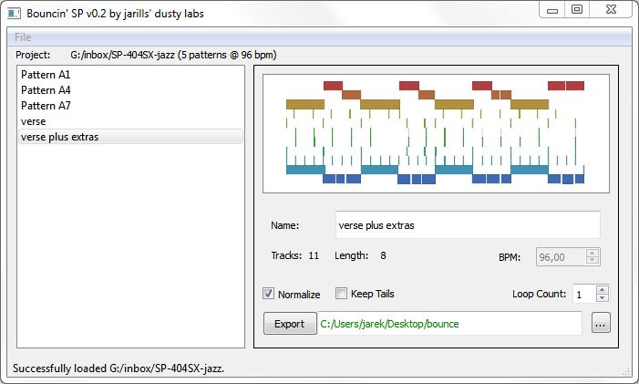
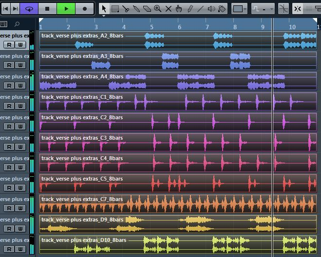

BouncinSP
Tool for automatic tracking/exporting of patterns made on Roland SP samplers (SP-404SX only for now).
By jarills, 2013.
Beta version (0.2).

Features:
- Supports SP-404SX patterns, samples and song information
- Single pattern export into individual tracks
- Setting a repeat (loop) count
- Keeping tails of samples after loop end
- Option to normalize each track
- Renaming patterns and using those names as a naming scheme for files
- Naming scheme: track_PATTERN_PAD_BARCOUNT.wav
- Graphical view of the pattern
- Gate, Loop, Reverse playback modes (no Lofi)
Loaded up in a DAW

TODO for 1.0 release (long-term milestone)
- full 404sx and 404 original support
- Mac, Linux, Windows builds
- stable, bug-free, working version
- icon
- Lofi fake, but better to do in the DAW
TODO and possible features in future versions
General:
- stereo export option (mixdown)
- support for changing the BPM (is that useful?)
Audio:
- preview pattern through audio interface